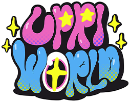
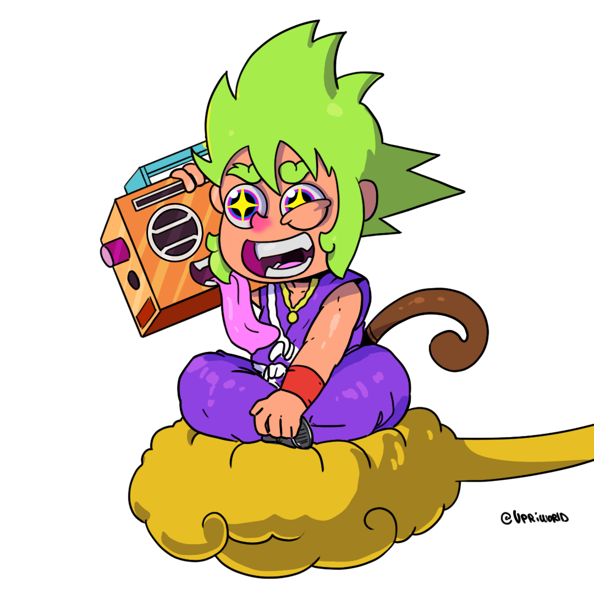
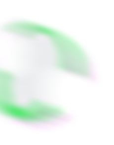

UPRIJON
The original character and central IP connecting fine art, NFTs, toys, murals, animation, and fashion.

The Genesis of Uprijon in Web3
Uprijon is more than an NFT project. It is a character-driven world connecting fine art, digital ownership, physical collectibles, exhibitions, experiences, games, and animation. Upriworld is the gateway into that universe, and every future chapter is designed to preserve the history and value of the Genesis collection.

Characters / Chapters / Living Worlds
One central character grows into a connected world of art, stories, products, and experiences.
The original character and central IP connecting fine art, NFTs, toys, murals, animation, and fashion.
The Genesis collection and foundation of Uprijon's Web3 ecosystem. Genesis holders hold its highest historical position.
The Mutation Chapter: transformed characters with their own lore, still connected to the original Upriworld.
New species and personalities built for stories, toys, cards, apparel, animation, games, and collaborations.
A living world of plants, objects, creatures, vehicles, buildings, and environments—each with its own personality.
Long-Term Ecosystem Roadmap
Protect the Genesis
Make Ownership Meaningful
Uprijon Is No Longer Alone
Collect the Art. Enter the World.
From Wallet to the Real World
Physical and Digital Become One
Your History in Upriworld Matters
Participate to Unlock
Enter the Map
The Universe Starts Moving
Collector Recognition
Utility grows with each collection while the Genesis remains the highest historical tier.
Highest access, Genesis-only editions, private previews, priority for toys and merchandise, anniversary claims, Passport recognition, cameo potential, and permanent historical status.
Mutation exclusives, priority access to Uprimons, special editions, quests, and selected physical products.
Character experiences, game and lore access, expansion benefits, and future physical adaptations.
An accessible entry point with Passport recognition, ownership history, possible card redemption, collecting privileges, and community access.
A Sustainable Creative Ecosystem
NFTs become the ownership and collector layer connecting every part of Uprijon's creative practice.

The Roadmap as a Story
“The goal is not to finish the roadmap. The goal is to build a world that can continue growing with the artist, the art, and its collectors.”Read the original roadmap